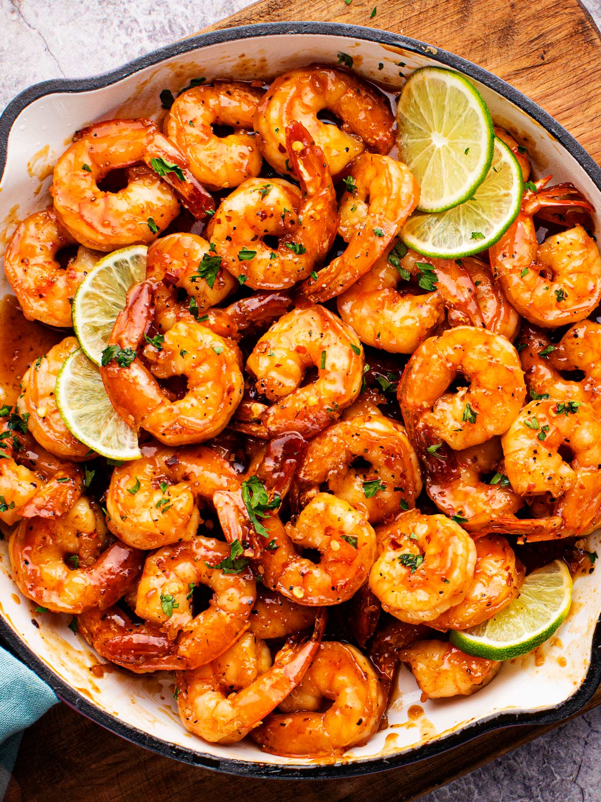

Honey Lime Shrimp

Description
A sweet and sour shrimp dish great for any occasion!
Shrimp Ingredients
- 3 tablespoons of vegetable oil
- 1 tablespoon of unsalted butter
- 1 - 1 1/2 lbs of shrimp (peeled and deveined)
- 1/2 teaspoons of salt and pepper
- 1/4 teaspoon of chili powder
- 1/8 teaspoon of cayenne pepper (for a kick)
Sauce Ingredients
- 1/3 cup of honey
- 1 1/2 tablespoons of soy sauce
- 3-5 minced cloves of garlic
- 1 teaspoon of siracha
- 1 or 2 juiced limes